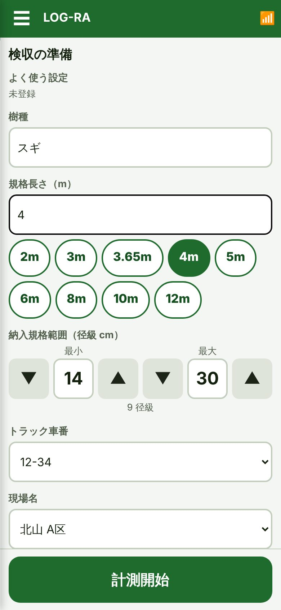
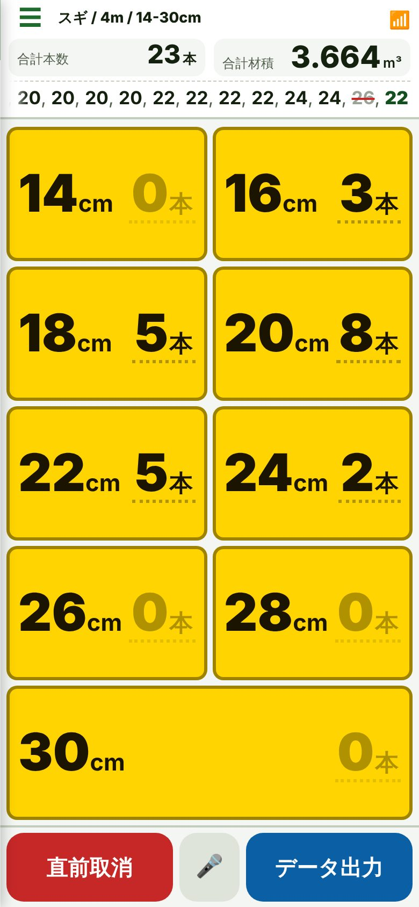
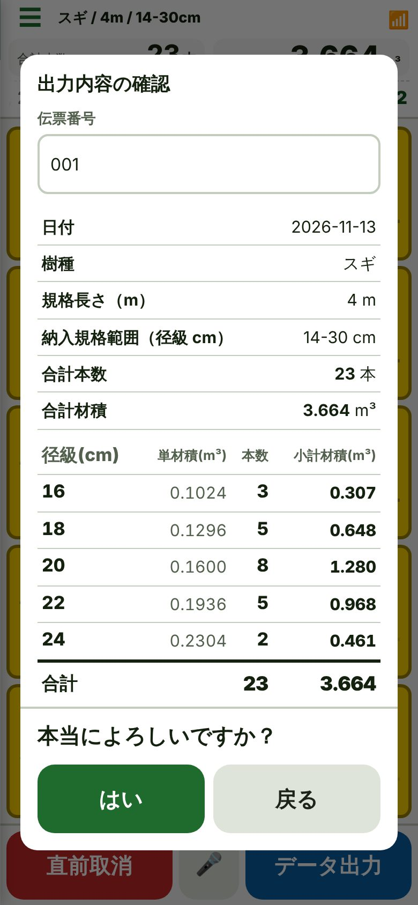
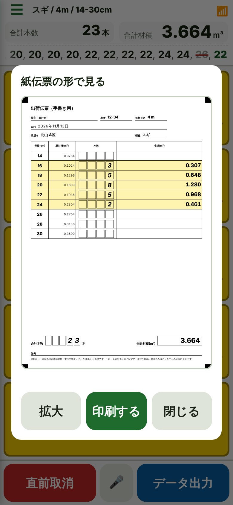

山と土場の丸太検収を、
圏外でも、手袋のままで。
径級をタップするだけ。径級ごとの本数と小計材積が、その場で見える。JAS準拠の丸太検収アプリです。
12月31日までのお申し込みは、2台目から5,000円（初年度のみ）
← 横にスワイプ →




初年度のみ。2026年12月31日までのお申し込みが対象です。2年目以降と、2027年1月1日以降のお申し込みは、2台目から7,500円。
年額・税込。台数が多いときは、合計が150,000円で頭打ちです（通常価格では20台目から）。
| 台数 | 通常 | 12/31までの申込（初年度） |
|---|---|---|
| 1台 | 9,800円 | 9,800円 |
| 3台 | 24,800円 | 19,800円 |
| 5台 | 39,800円 | 29,800円 |
| 10台 | 77,300円 | 54,800円 |
| 20台 | 150,000円 | 104,800円 |
台数は「頭」の数です。トラクタ・トラックを数え、トレーラーと、運転手や事務員の人数は数えません。予備車は「休み」にしておけば数えません。
解約・支払い方法の変更は、アプリのメニュー「支払い・プラン管理」から、いつでもできます。
アプリストアは使いません。ブラウザで開いて、ホーム画面に追加すると、アイコンから開けて、圏外でも動きます。
LINEやInstagramの中で開いたときは、右上の「…」から「ブラウザで開く」を選んでから、追加してください。
使えます。いちど開いたあとは、機内モードでも起動して、計測・保存・CSVの作成ができます。通信が必要なのは、契約の確認（1日に1回、通信できるとき）と、音声入力、事務所とのデータ共有だけです。
トラクタ・トラックの「頭」の数です。トレーラーは数えません。車番は何台でも登録でき、数えるのは「使用中」にしたものだけです。
入力した内容と、出力した伝票は、お使いの端末の中に保存されます。端末を替えるときは、ライセンスコードかご購入時のメールアドレスで、使い始められます。
できます。アプリのメニュー「支払い・プラン管理」から、いつでも解約できます。返金の考え方は、返金方針のページに書いてあります。
support@terra-tx-jp.com へどうぞ。